Приобретение практических навыков взаимодействия пользователя с системой посредством командной строки.
1.Выполнить навигацию по файловой системе. 2.Получить справочную информацию. 3.Выполнить управление каталогами. 4.Сделать анализ содержания каталогов. 5.Работа с history. 6.Комбинировать команды.
Команда man используется для просмотра (оперативная
помощь) в диалоговом режиме руководства (manual) по основным командам
операционной системы типа Linux. Формат команды:
man <команда>
Команда cd используется для перемещения по файловой
системе операционной системы типа Linux. Формат команды:
cd [путь_к_каталогу]
Команда pwd. Для определения абсолютного пути к текущему каталогу используется команда pwd (print working directory).
Команда ls. Команда ls используется для
просмотра содержимого каталога. Формат команды:
ls [-опции] [путь]
Команда mkdir. Команда mkdir используется
для создания каталогов. Формат команды:
mkdir имя_каталога1 [имя_каталога2...]
Команда rm. Команда rm используется для
удаления файлов и/или каталогов. Формат команды:
rm [-опции] [файл]
Команда history. Для вывода на экран списка ранее выполненных команд используется команда history. Выводимые на экран команды в списке нумеруются. К любой команде из выведенного на экран списка можно обратиться по её номеру в списке, воспользовавшись конструкцией !<номер_команды>.
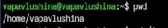
Перейдём в каталог tmp и посмотрим его содержимое с помощью команды ls и опции -а (рис. ¿fig:002?).
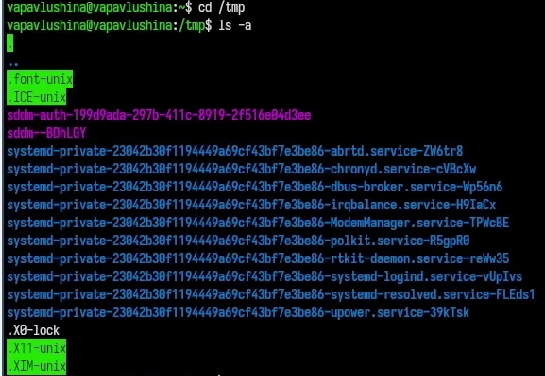
Посмотрим содержимое tmp, используя другие опции ls (рис. ¿fig:003?), (рис. ¿fig:004?), (рис. ¿fig:005?).
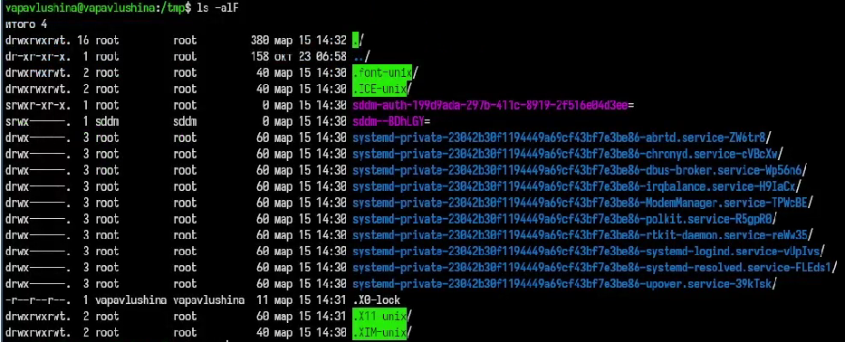
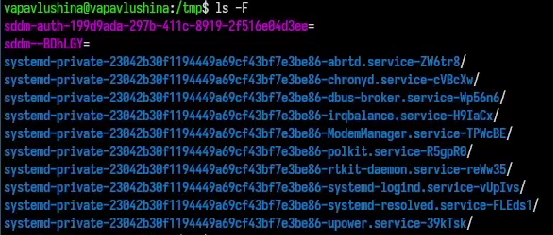
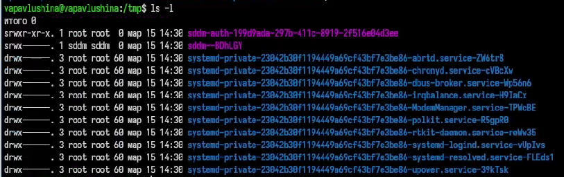
Какая же разница в выводе информации через разные опции?
-a - выводит все файлы, включая скрытые -l -
выводит подробный список файлов -F - выводит информацию с
символами-указателями, чтобы сразу понять тип файла -alF -
включает в себя все предыдущие опции
Определим, есть ли в каталоге /varn/spool подкаталог cron (рис. ¿fig:006?).
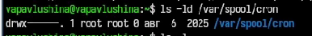
Перейдём в домашний каталог и выведем его содержимое (рис. ¿fig:007?).
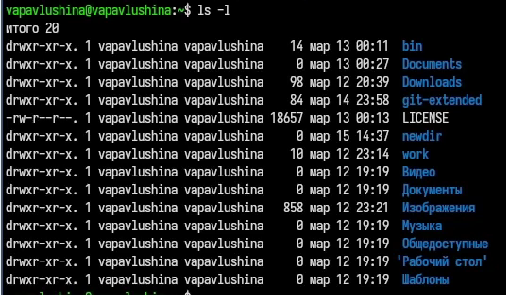
Создали каталог newdir и в нём подкаталог morefun, также были созданы каталоги letters, memos., misk (рис. ¿fig:008?).
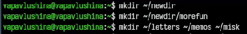
Удалили каталоги letters, memos., misk, попробовали удалить каталог newdir с помощью команды rm (рис. ¿fig:009?).
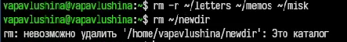
Проверим, что каталог newdir не удалился (рис. ¿fig:010?).
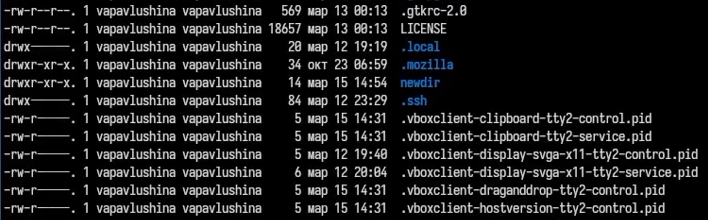
Удалим каталог newdir с подкаталогом morefun с помощью команды mrdir (рис. ¿fig:011?).
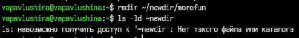
Вывели информацию о команде ls с помощью man (рис. ¿fig:012?), (рис. ¿fig:013?).
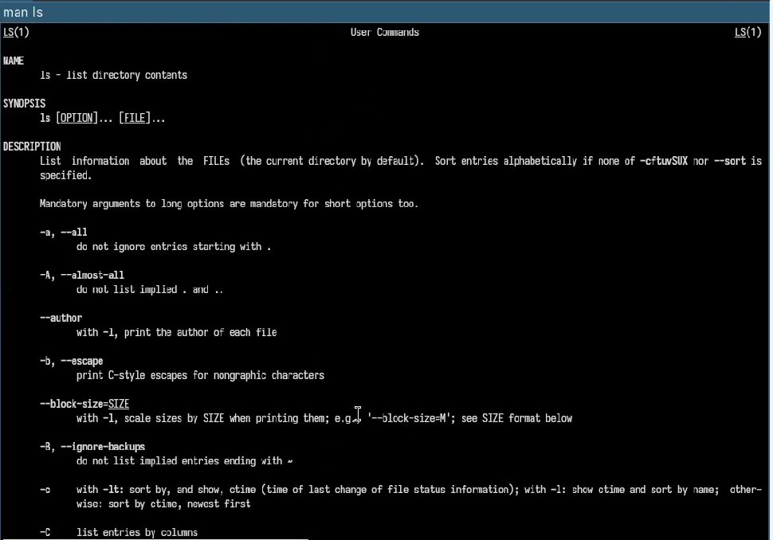
Вывели информацию о команде cd с помощью man (рис. ¿fig:014?), (рис. ¿fig:015?).
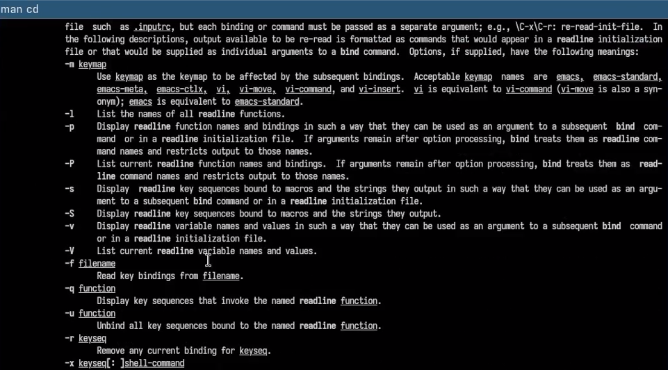
Вывели информацию о команде pwd с помощью man (рис. ¿fig:016?), (рис. ¿fig:017?).
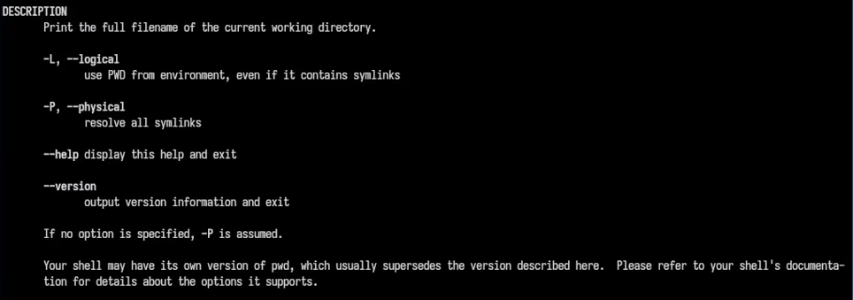
Вывели информацию о команде mkdir с помощью man (рис. ¿fig:018?), (рис. ¿fig:019?).
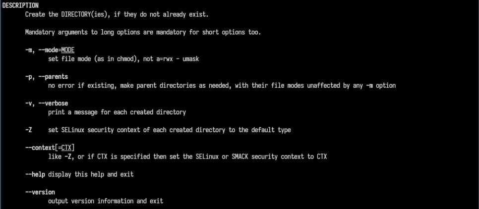
Вывели информацию о команде rmdir с помощью man (рис. ¿fig:020?), (рис. ¿fig:021?).
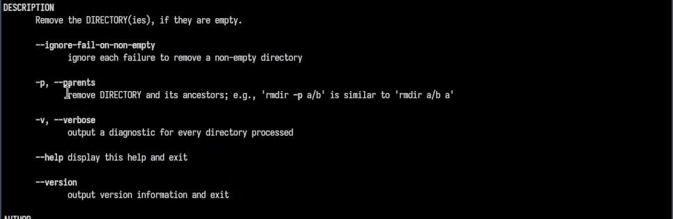
Вывели информацию о команде rm с помощью man (рис. ¿fig:022?), (рис. ¿fig:023?).
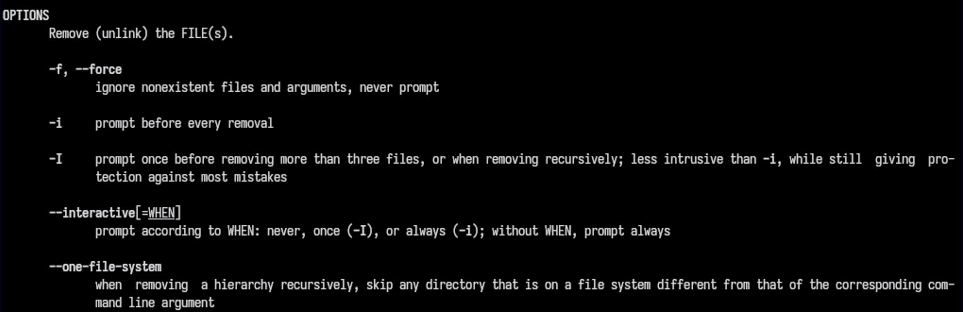
Вывели информацию о последних командах с помощью команды history (рис. ¿fig:024?), (рис. ¿fig:025?).
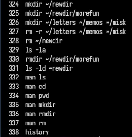
Комбинируем команды (рис. ¿fig:026?), (рис. ¿fig:027?).
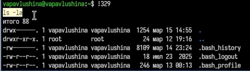
Просмотрим название нашей домашней папки (рис. 1).Приобрела практические навыки взаимодействия пользователя с системой посредством командной строки.